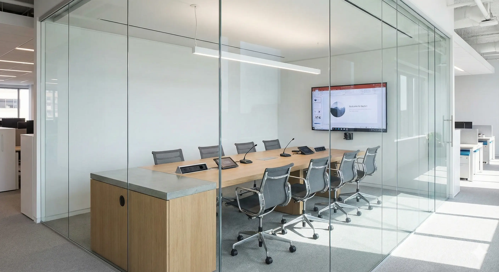
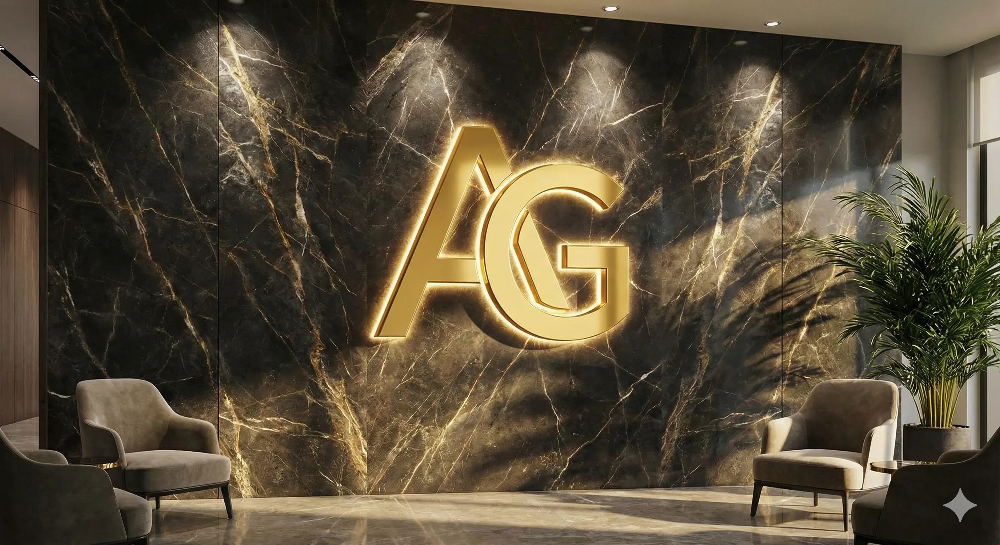

The days of the traditional, closed-door Omani office with beige walls and heavy wooden desks are fading fast. As we move through 2025, aligned with the goals of Oman Vision 2040, companies in Muscat are rethinking their physical environments to attract top talent and foster innovation.
Whether you are in Ruwi, Al Khuwair, or the new business districts of Airport Heights, modernizing your workspace is no longer a luxury—it is a competitive necessity. Here are the top 5 fit-out trends dominating the market this year.
Biophilic Design: Bringing Nature Indoors
The term "Biophilia" means "love of life." In office design, it translates to bringing the outdoors in. In a hot climate like Muscat, where we spend months indoors to avoid the heat, this is vital for mental health.
- What it is: Vertical gardens (Green Walls), moss art, natural stone textures, and maximized natural light.
- Why do it? Studies show that greenery increases productivity by 15% and reduces stress.
The Rise of Acoustic Glass Partitions
Open plan offices are great for collaboration but terrible for noise. The 2025 solution is Double-Glazed Acoustic Glass Partitions.
They allow light to flow through the entire office (saving on energy bills) but block sound effectively. This creates "visual openness" with "auditory privacy." At Al-Furqan, we are seeing a massive demand for black-framed aluminium glass partitions which offer a sleek, industrial-chic look popular in Shatti Al-Qurum.
"Resimercial": Comfort Meets Productivity
Residential + Commercial = Resimercial.
After years of working from home, employees expect comfort. We are replacing stiff waiting areas with comfortable lounge sofas, warm lighting (3000K instead of the harsh 6000K white fluorescent), and coffee corners that look like specialized cafes.
Tech-Integrated Smart Meeting Rooms
A meeting room in 2025 needs more than a table and chairs. It needs to be "Hybrid-Ready."
This means integrating cables seamlessly into the furniture (no messy wires on the floor), installing acoustic ceiling baffles to prevent echo during Zoom calls, and designing the wall behind the camera to look professional. As fit-out contractors, we now coordinate directly with IT teams to ensure MEP works align with your tech needs.
Immersive 3D Lobby Branding
Your office is your biggest marketing asset. A printed sticker on the door is no longer enough.
The trend is now 3D Illuminated Signage integrated directly into the interior architecture. Think of a backlit logo embedded into a marble reception wall or a "History Wall" made of acrylic that showcases your company's timeline.
This is where Al-Furqan excels—we don't just build the wall; we manufacture the custom 3D signage in-house to ensure it fits perfectly.
Conclusion: How to Start Your Renovation
Updating your office doesn't always require a complete demolition. Sometimes, adding glass partitions to divide a large room, updating the reception signage, and adding biophilic elements can completely transform the vibe.
At Al-Furqan International, we are unique in Oman because we handle both the Interior Fit-Out and the Custom Signage. One contractor, one vision, zero headaches.
Planning an Office Renovation in 2025?
Get a free site survey and a 3D Concept Design for your workspace.
Schedule Free Consultation